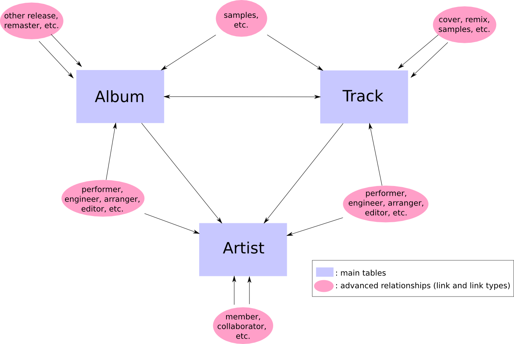
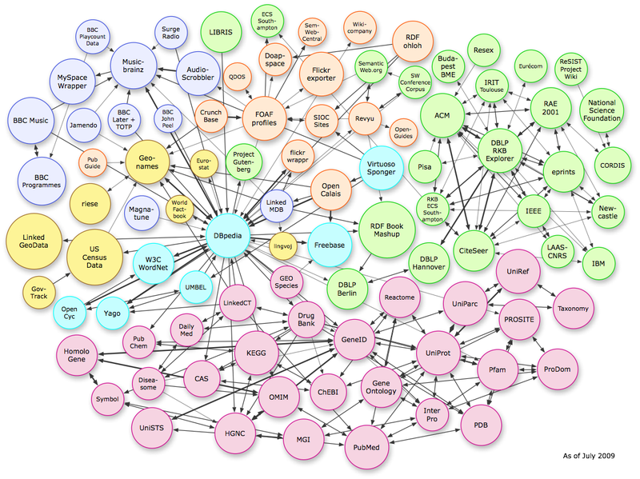

A Music Ontology primer
Publishing structured music-related data on the Web
Wait... Ontology??
A Web ontology is...
- a set of web identifiers for concepts and relationships in a domain
- a set of web identifiers different datasets can refer to when they deal with the same kind of thing
- a set of axioms characterising those concepts and relationships
- specified in RDF, using one of the flavors of OWL
- has its roots in Description Logics
Music Ontology scope
A Web Ontology for music-related data
The core Music Ontology has the following scope:
- Editorial data
- Music creation workflow
- Temporal annotations and event decomposition
Creating web identifiers for commonly used concepts in the music domain...
For example...
In this performance a particular arrangement of the Trout Quintet by Franz Schubert was interpreted.
"Come as You Are" by the band Nirvana was released on a single and the "Nevermind" album.
Ten recordings of this particular session have been made, each with a particular microphone location.
On this particular signal, here are the locations of the different beats.
For example...
In this performance a particular arrangement of the Trout Quintet by Franz Schubert was interpreted.
"Come as You Are" by the band Nirvana was released on a single and the "Nevermind" album.
Ten recordings of this particular session have been made, each with a particular microphone location.
On this particular signal, here are the locations of the different beats.
Dependencies...
The Music Ontology is based on other ontologies:
The Timeline ontology
The Timeline ontology, for expressing temporal information on multiple timelines:

The Event ontology


The groundings of MO
The Friend of a Friend vocabulary 
- People
- Groups
- Organisations
- Relationships
- Online accounts
What can we do now?
Describing events on multiple timelines, linking together musical objects
...and well, that's about all we need!
The Music Ontology subsumes all these ontologies to deal with music-related information
The Music Ontology
A typical Musical Ontology workflow

Trout Quintet (1)
:work
a mo:MusicalWork ;
dc:title "Franz Schubert's Trout Quintet" .
Trout Quintet (2)
:work
a mo:MusicalWork ;
dc:title "Franz Schubert's Trout Quintet" .
:performance
a mo:Performance ;
dc:title "Trout Quintet, performed by the London Symphony Orchestra" ;
mo:performance_of :work ;
mo:performer <http://dbpedia.org/resource/London_Symphony_Orchestra> ;
mo:recorded_as [
a mo:Signal ;
mo:published_as :track1 ;
dc:title "Recording of the LSO performing the Trout Quintet" ;
] .
Trout Quintet (3)
:track1
a mo:Track ;
mo:track_number 5 ;
owl:sameAs <http://dbtune.org/musicbrainz/resource/
track/3208fbce-c20f-4362-a3d5-5405ac1904bd> ;
dc:title "Trout Quintet, performed by the LSO, on 'Favorite Classics'"
.
Now, let's write some RDF!
Describing Glenn Gould's last public performance
- It happened on April 10, 1964
- In Los Angeles, at the Wilshire Ebell Theater
- He played Beethoven's Piano Sonata No. 30
Glenn Gould's performance
Let's first write that there was a performance, and that it involved Glenn Gould
@prefix mo: <http://purl.org/ontology/mo/> .
@prefix : <#> .
:performance
a mo:Performance ;
mo:performer <http://dbpedia.org/resource/Glenn_Gould> .
Happened on April 10, 1964
@prefix mo: <http://purl.org/ontology/mo/> .
@prefix : <#> .
@prefix dc: <http://purl.org/dc/elements/1.1/> .
@prefix xsd: <http://www.w3.org/2001/XMLSchema#> .
:performance
a mo:Performance ;
mo:performer <http://dbpedia.org/resource/Glenn_Gould> ;
dc:date "1964-04-10"^^xsd:date .
At the Wilshire Ebell Theater
@prefix mo: <http://purl.org/ontology/mo/> .
@prefix : <#> .
@prefix dc: <http://purl.org/dc/elements/1.1/> .
@prefix xsd: <http://www.w3.org/2001/XMLSchema#> .
@prefix event: <http://purl.org/NET/c4dm/event.owl#> .
:performance
a mo:Performance ;
mo:performer <http://dbpedia.org/resource/Glenn_Gould> ;
dc:date "1964-04-10"^^xsd:date ;
event:place <http://dbpedia.org/resource/Ebell_of_Los_Angeles> .
Performed Beethoven's Piano Sonata No. 30
@prefix mo: <http://purl.org/ontology/mo/> .
@prefix : <#> .
@prefix dc: <http://purl.org/dc/elements/1.1/> .
@prefix xsd: <http://www.w3.org/2001/XMLSchema#> .
@prefix event: <http://purl.org/NET/c4dm/event.owl#> .
:performance
a mo:Performance ;
mo:performer <http://dbpedia.org/resource/Glenn_Gould> ;
dc:date "1964-04-10"^^xsd:date ;
event:place <http://dbpedia.org/resource/Ebell_of_Los_Angeles> ;
mo:performance_of <http://dbpedia.org/resource/
Piano_Sonata_No._30_(Beethoven)> .
Save as glenn_gould_performance.n3
Checking that it parses...
Go to http://www.rdfabout.com/demo/validator/ and check your RDF (make sure to select "Turtle" in the input format drop-down list)
Or, if you have raptor-utils installed, just run the following from the command-line:
$ rapper -i turtle glenn_gould_performance.n3
It should give 5 RDF triples
Querying from the command-line (1)
Give me places in which Glenn Gould played
Querying from the command-line (2)
PREFIX mo: <http://purl.org/ontology/mo/>
PREFIX event: <http://purl.org/NET/c4dm/event.owl#>
SELECT ?place
FROM <glenn_gould_performance.n3>
WHERE {
?performance
mo:performer <http://dbpedia.org/resource/Glenn_Gould> ;
event:place ?place
}
Save as places_in_which_glenn_gould_played.rq
Querying from the command-line (3)
Use roqet from the rasqal-utils package:
$ roqet places_in_which_glenn_gould_played.rq
roqet: Querying from file places_in_which_glenn_gould_played.rq
roqet: Query has a variable bindings result
result: [place=uri<http://dbpedia.org/resource/Ebell_of_Los_Angeles>]
roqet: Query returned 1 results
Or use sparql.org (the file is at http://moustaki.org/resources/glenn_gould_performance.n3) - results
Keep that RDF file, we'll use it later...
And now, for more Music Ontology
In the same way, we can describe more complex things:
- Annotations of an audio signal
- Events happening during a performance or a recording
- Symbolic information
- More examples
Structural annotations (1)
:signal owl:sameAs <http://dbtune.org/musicbrainz/resource/
signal/eb20ee61-414f-4eee-8dce-190db516a466>.
:signal mo:time [
tl:duration "PT2M14S"^^xsd:duration;
tl:timeline :tl;
].
Structural annotations (2)
:chorus1 a ps:Chorus;
rdfs:label "First chorus";
event:time [
tl:timeline :tl;
tl:start "PT0S"^^xsd:duration;
tl:duration "PT9S"^^xsd:duration;
].
:verse1 a ps:Verse;
rdfs:label "First verse";
event:time [
tl:timeline :tl;
tl:start "PT9S"^^xsd:duration;
tl:duration "PT33S"^^xsd:duration;
].
Decomposing a recording session
:rec a mo:Recording;
rdfs:label "live recording of my band in studio";
event:sub_event :guitar1, :guitar2, :drums1, :kick1, :sing.
:sing a mo:Recording;
rdfs:label "Voice recorded with a SM57";
event:factor rd:sm57;
event:place [rdfs:label "Middle of the room"].
:kick1 a mo:Recording;
rdfs:label "Kick drum using a Shure PG52";
event:factor rd:pg52;
event:place [rdfs:label "Kick drum microphone location"].
Symbolic information (1)
:compo
a mo:Composition;
event:product :syrinx_w ;
event:product :syrinx_s .
:syrinx
a mo:MusicalWork;
owl:sameAs <http://dbpedia.org/resource/Syrinx_%28Debussy%29> .
:syrinx_s
a mo:Score ;
so:score_time :tl .
:tl a so:ScoreTimeLine.
Symbolic information (2)
:e000
a so:DottedEighthNote ;
so:pitch :b_flat ;
event:time [
tl:onTimeLine :tl ;
tl:meets :e001 ;
] .
:e001
a so:ThirtysecondNote ;
so:pitch :a ;
event:time [
tl:onTimeLine :tl ;
tl:meets :e002 ;
] .
Music Ontology extensions
Multiple extensions, to deal with:
Available Music Ontology data
Multiple sources of Music Ontology data, including:
- BBC Music, hosting around 15 million statements
- BBC Programmes, offering temporal segmentation of programmes
- DBtune, hosting 10 datasets and over 14 billion statements
- Discogs, hosting information about artists, labels and releases
MusicBrainz
A special mention for MusicBrainz, a community music database holding:
- around 500 000 artists
- around 700 000 releases
- and around 8.5 million tracks
Linked Data version and SPARQL end-point at dbtune.org/musicbrainz
The MusicBrainz schema
The MusicBrainz NGS
The MusicBrainz's Next Generation Schema adds:
- Musical works and performances (the thingy table)
- Release groups
- Recording (signals)...
Now really close to MO!
Breaking artificial domain boundaries

Extensibility
- URIs from different ontologies can be mixed and mashed
- There are ontologies for almost everything...
- ...and if a domain is missing, create your own
Artists and geolocation
<http://dbtune.org/jamendo/artist/5>
a
<http://purl.org/ontology/mo/MusicArtist> .
<http://dbtune.org/jamendo/artist/5>
<http://xmlns.com/foaf/0.1/based_near>
<http://sws.geonames.org/2991627/> .
<http://sws.geonames.org/2991627/>
a
<http://www.geonames.org/ontology#Feature>
Why does it matter?
Compare that to other metadata formats...
Most of them are geared towards a specific application, preventing extensibility
The metadata format limits the context in which it can be used
- XSPF: playlisting
- MPEG-7: temporal annotations
- AceXML: machine learning
- WGS-84: geolocation
Using RDF, you can pick concepts from different places and adapt to any context
A sneak peek at the wider Linked Data world
The Linking Open Data (LOD) project
- Started in late 2006
- Following a design note from Tim Berners-Lee
- More and more sources of open data everywhere... but existing in isolation from one another
- A domain-independent effort to publish these as Linked Data and join them up
- One of the most successful project ran by the Semantic Web community...
- Now involves the US and the UK governments!
October 2007...

September 2008...

And July 2009

Let's go on a Linked Data journey...
How are they related?

(No, not the moustache)


has member

Getting back to our RDF example...
:performance
a mo:Performance ;
mo:performer <http://dbpedia.org/resource/Glenn_Gould> ;
dc:date "1964-04-10"^^xsd:date ;
event:place <http://dbpedia.org/resource/Ebell_of_Los_Angeles> ;
mo:performance_of <http://dbpedia.org/resource/
Piano_Sonata_No._30_(Beethoven)> .
Three links to URIs within the Linked Data cloud
We can enrich that RDF by following links...
:performance
event:place <http://dbpedia.org/resource/Ebell_of_Los_Angeles> .
Load the place in which Glenn Gould has played
Query for more information about that place...
Let's do it in python
We can use rdflib to parse local and remote RDF - get this data linked
install rdflib using Python EZ setuptools http://pypi.python.org/pypi/setuptools
$ sudo easy_install rdflib -U "rdflib>=2.4"
Get the code in examples/scripts/glenn_gould_performance
Python code
$ python load_n_query.py
Importing local RDF file: glenn_gould_performance.n3
Loading:
http://dbpedia.org/resource/Ebell_of_Los_Angeles
Glenn Gould has played in:
http://dbpedia.org/resource/Ebell_of_Los_Angeles
The Ebell of Los Angeles is a women's club housed in a complex in the
Mid-City section of Los Angeles that includes a clubhouse building and
the renowned 1,270-seat Wilshire Ebell Theatre. The complex has been
owned and operated since 1927 by the Ebell of Los Angeles women's
club, which was formed in Los Angeles in 1894.
It is at latitude 34.06166839599609 and longitude -118.3241653442383